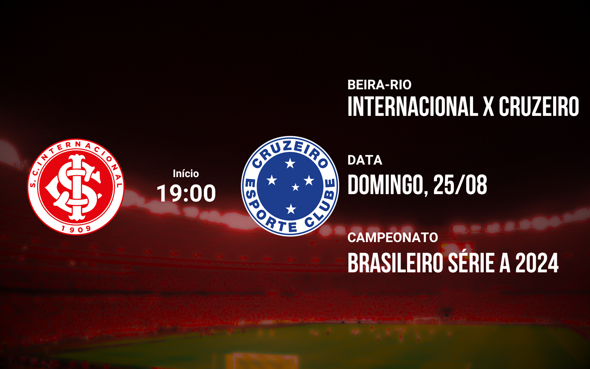

Atuações do Inter: Thiago Maia falha e é o pior do time em derrota; dê suas notas

Thiago Maia falha e é o pior do time em derrota
Roger lamenta derrota para o lanterna: "Briga por outra competição"

Técnico explicou estratégia de colocar Alario e Ricardo Mathias para tentar evitar a derrota ao Atlético-GO
Priscila explica grito na cara de goleira espanhola: "Estavam debochando"
Inter vence o Palmeiras e entra no G-8 do Brasileirão Feminino
Próximo jogo
